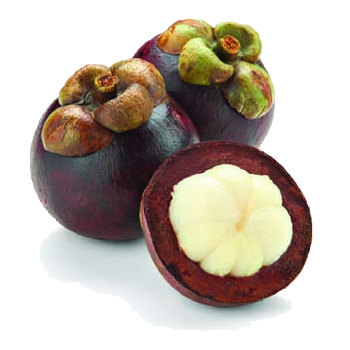
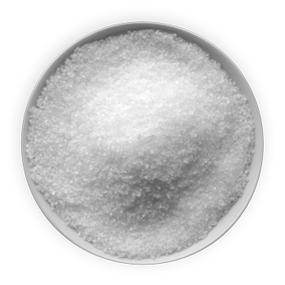

Recent Flavor Stories
-
Man, I tamarind!
Never heard of this spice before. Must be something NPR did a special on last season.
-

The mighty mangosteen
This is definitely made up. 100% positive that this is probably 90% real.
-

Ipsum Salt
Latin Salt? This is some more stuff about this thing here in this bowl.